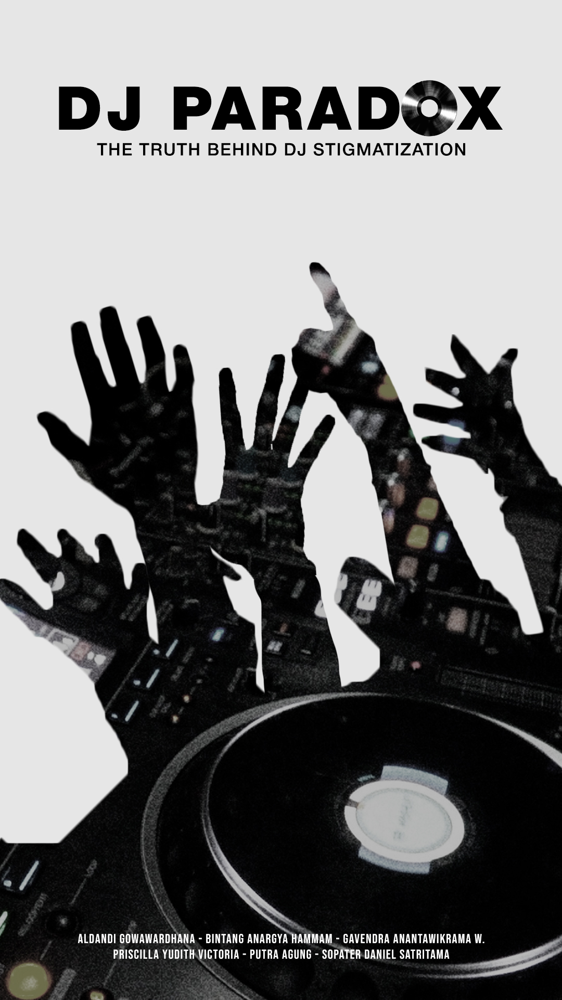
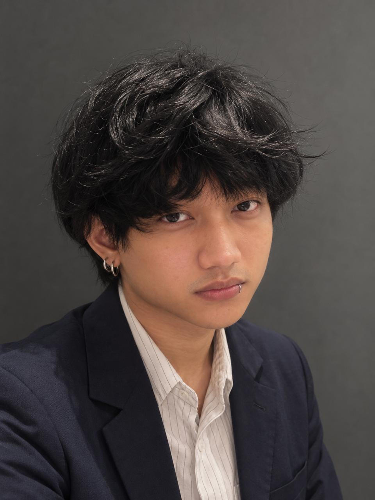
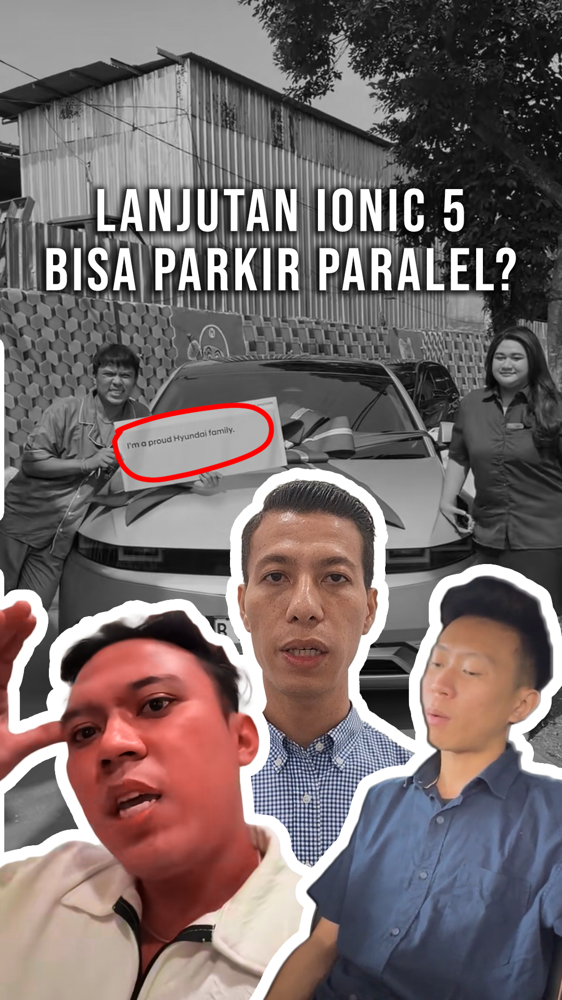
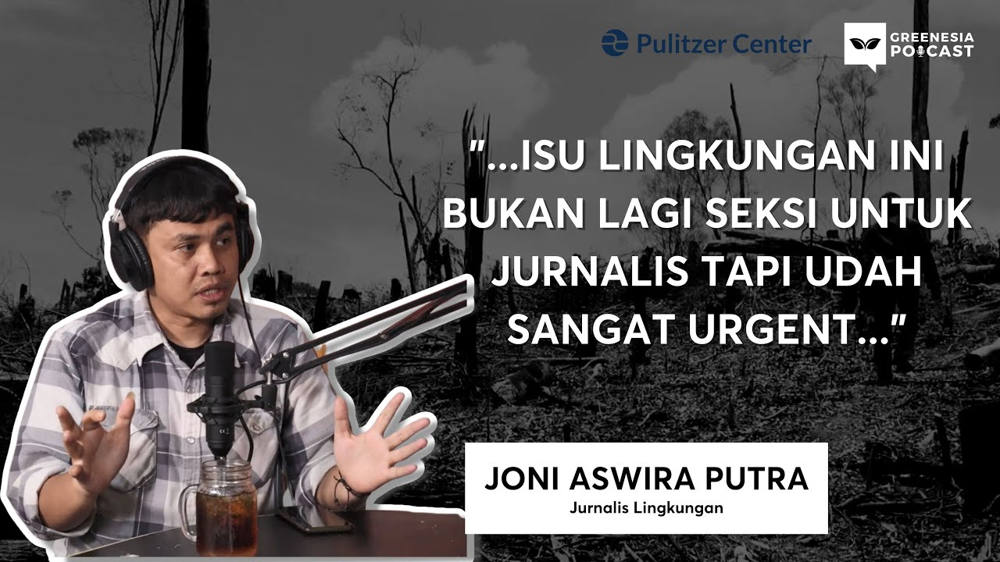
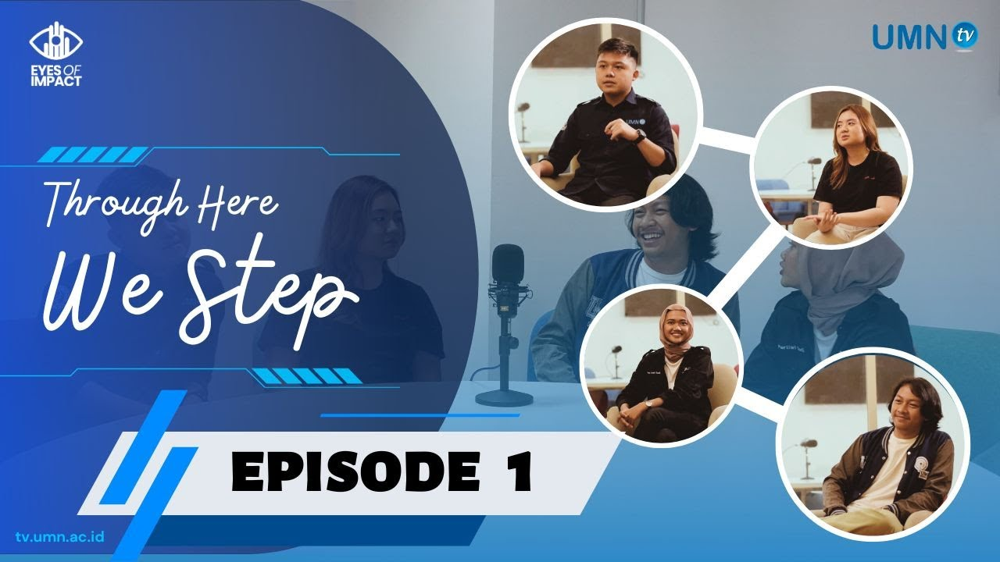
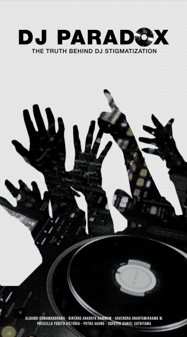
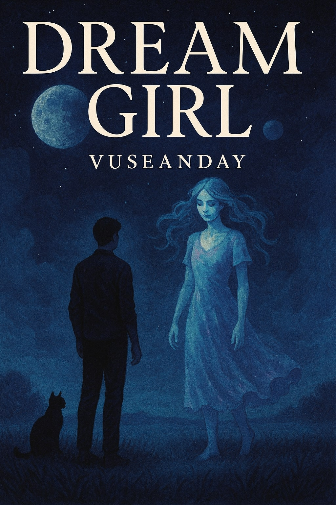
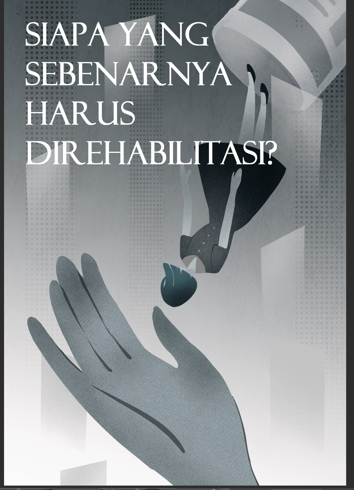
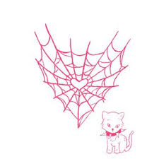

Custom Posters
CLICK STACK TO CYCLE



Graphic Design & Print

Journalist · Digital Video Producer
Journalism graduate and digital video producer experienced across newsroom and social-media production, with work spanning Tirto.id, SEA Today, Bixfeeds Media, and Gardar Auto.
Featured Work

End-to-end short-form production for TikTok and Instagram: content planning, scripting, videography, editing, graphics, copywriting, publishing, and performance analysis.
CONCEPT → SCRIPT → SHOOT → EDIT → PUBLISH → ANALYZE
Newsroom Work
Selected proof from professional newsroom experience, not just portfolio exercises.
Scriptwriter
Researched and scripted digital news and commercial video for Tirto Daily, Eh Tau Gak, and Periksa Fakta, defining narration, lower-thirds, visual cues, scoring, and supporting elements under daily newsroom deadlines.
Freelance Video Editor
Edited 1–1.5 minute short-form news and highlight videos for digital and social platforms. Work included footage sourcing and organization, licensed music selection, cutting, pacing, lower-thirds, effects, transitions, and audio under tight newsroom deadlines.
A multimedia journalism feature combining field reporting, videography, editing, scripting, voice-over, and graphic design.

Producer · Assistant Videographer · Assistant Video Editor · Scriptwriter
Journalism video project developed through research, scripting, production support, and post-production.
Videographer · Video Editor · Scriptwriter · Reporter
Journalism video project combining reporting, shooting, editing, voice-over, and graphic design.

Voice Actor · UMN TV
Provided voice-over narration and reviewed scripts for narrative flow, clarity, and pacing.

Videographer · Video Editor · Scriptwriter · Reporter
Unreleased documentary · private screening.
Plan and produce short-form social content from concept and scripting through shooting, editing, publishing, and performance analysis. Current tracked work has generated 3.8M+ cumulative TikTok and Instagram views, with 41 videos above 7K and a top performer above 2.44M.
Researched and scripted digital news and commercial video content for Tirto Daily, Eh Tau Gak, and Periksa Fakta, including narration, lower-thirds, visual cues, and scoring direction.
Managed Instagram and TikTok content calendars and led creative production from concept and scripting through editing and publishing.
Edited short-form news and highlight videos, handling footage selection, pacing, lower-thirds, visual effects, transitions, music, and audio under newsroom deadlines.
Coordinated a large-scale university seminar, four cross-functional divisions, technical staging, logistics, and VVIP hospitality for Raditya Dika.
Led, mentored, and evaluated 20+ incoming Communication students while coordinating faculty orientation activities.
Provided voice-over narration for a digital broadcast program while reviewing and refining audio scripts for narrative flow, clarity, and pacing.
THE VUSEANDAY ARCHIVES
Personal essays, fiction, and narrative experiments exploring memory, grief, intimacy, identity, and the stranger corners of everyday life.
A dog's final moments under the cruel sun, watched by a weeping devil who laments he cannot offer a better end.
Read on Medium →A haunting portrait of transactional intimacy, trauma, and poverty, where prayers and identity fade behind city walls.
Read on Medium →A reflection on mortality and impermanence: we own nothing, not even people. We simply return them to the void.
Read on Medium →Life viewed as episodes watched by a silent television set, capturing intimate, mundane, and tearful memories.
Read on Medium →TAP BOOK TO FLIP

The Girl Who Stayed
She was the anchor in a drifting world, the only one who didn't fade when the morning came. But staying has its own cost. A novel about the haunting persistence of memory and the girl who refused to become just another story.
Novel
A 15,000+ word feature narrative examining social stigma, labeling, and structural inequality surrounding drug-related issues, translating research into an accessible long-form story.
Published Feature Book · 2026A browser game developed to explore interactive storytelling mechanics. Demonstrates proficiency in logic, user flow, and digital engagement.

'; lucide.createIcons();" class="w-full h-full object-cover grayscale group-hover:grayscale-0 transition-all duration-300">CLICK STACK TO CYCLE

Graphic Design & Print